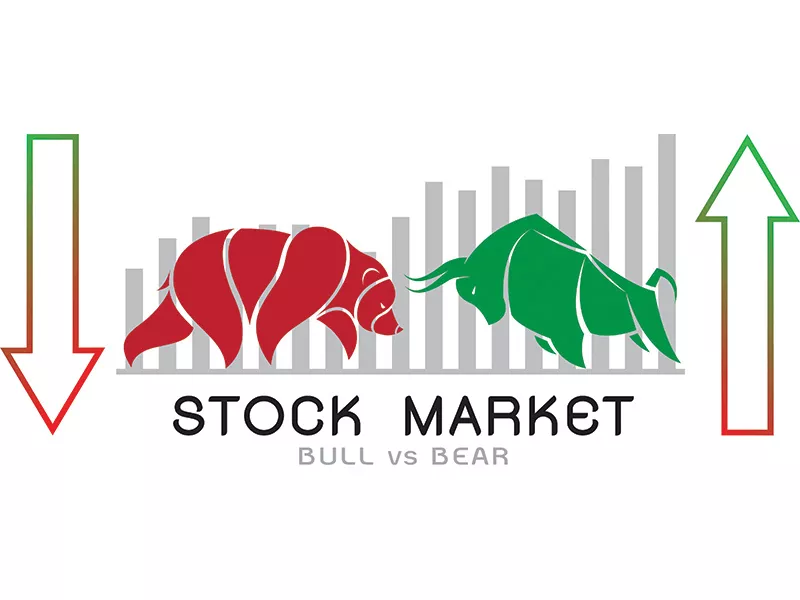

What is share market
The stock market often referred to as the share market, is a place wherein peopleʹs fortunes can dramatically change in an instant. As they say, "The stock market is a vehicle for shifting money from the impatient to the patient." People usually come to the stock market with the goal of becoming millionaires or billionaires, but they lack the patience and confidence necessary to accumulate a fortune over time. Warren Buffet, Peter Lynch, Rakesh Jhunjhunwala, and others are only a few examples of stock market riches. The crucial thing to remember is that these titans were all rewarded for their perseverance and long-term market vision. To be a successful investor, you need a long-term perspective on the market, as well as the expertise and patience to hold the correct investment. As Benjamin Franklin rightly once rightly quoted “An investment in knowledge pays the highest interest.” You won’t be able to succeed in the market until you invest in your education. The share market is a tricky place to be in. One cannot do well in the markets if one does not take any effort to learn about it.
How does a share Market operate
A stock market consists of a bunch of sellers and buyers who trade in financial instruments such as stocks, bonds, etc. A publicly traded corporation is one that has issued stock through an initial public offering (IPO) and is traded on at least one stock exchange. Stock market trading refers to the buying and selling of shares listed on a stock exchange. The stock exchange serves as a marketplace for stockbrokers to trade listed stocks and other securities. Only after a stock is listed on an exchange can it be bought or sold.
Meaning
Short-term trading is defined as investing in the market for a period of one to ninety days, whilst medium-term trading is defined as participating in the market for six to eighteen months. Long-term investment, on the other hand, requires holding a security for an extended period. A long-term investment is one that an individual or a firm intends to hold for more than a year, such as stocks, bonds, real estate, and cash
Participants of the stock market
The stock market is composed of different participants.Here's a look at the different participants of the stock market
- The Regulator
- Companies
- Stock exchange
- Intermediaries or stockbrokers
- Investor or stockbrokers
- Investor and traders
- Depository and Depository participants
Types of account required
A person must have three types of accounts in order to trade on the stock market: a bank account, a trading account, and a demat account. A bank account is something weʹre all familiar with.
- A Trading account is required for the purpose of purchasing and selling off securities.
- A Dematerialized account often referred to as a Demat account is used to store shares and securities in an electronic or dematerialized form. The shares you buy/sell will be credited or debited to/from your Demat Account.
How does a stock market works
Investing in stocks is one of the means to create wealth as the stock market has the potential to yield attractive returns. When investors invest in the stock of a company, they not only become a part-owner of the company but also participate in the profits earned by the company. Stock investing could give them regular returns in the form of dividends, as well as the benefit of capital appreciation when the value of their investment rises. Investing in the stock market is, therefore, quite beneficial. That being said, one cannot ignore the market risks associated with stock trading. While investors can make profits in a rising market, they can also suffer losses when the markets fall. Stock trading is, therefore, risky. Investors need to understand how the stock market works so that they can use stock market investments to their benefit.
Additional Resources
To learn more about trading click on the given links:-
!!HAPPY TRADING AND HAPPY INVESTING!!
To open a Demat and Trading Account
tinyurl.com